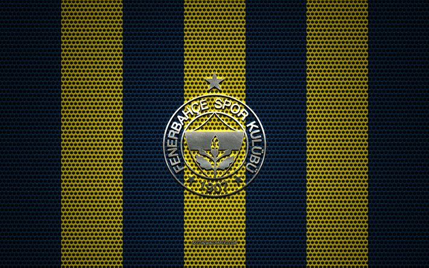
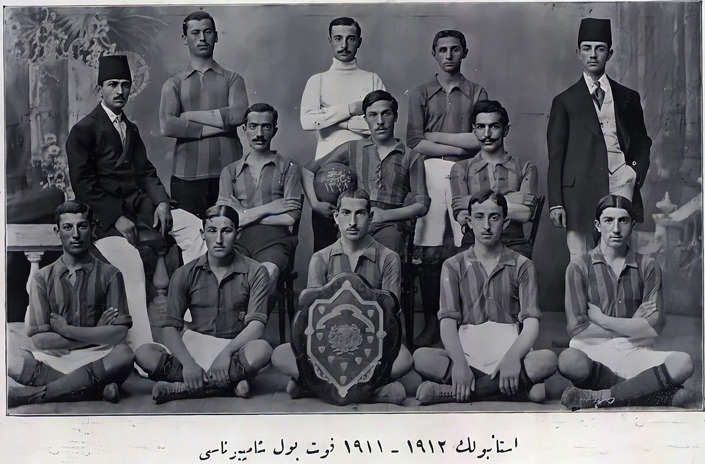
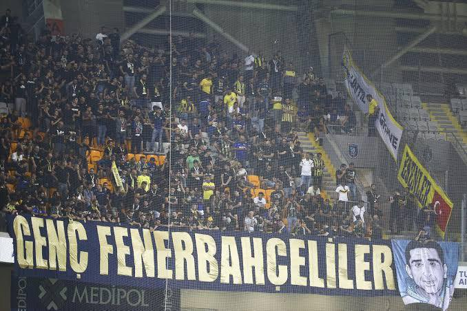

Fenerbahçe'nin toplamda 28 Türkiye şampiyonluğu bulunmaktadır. Süper Lig'de 19 kez, Millî Küme'de 6, Türkiye Futbol Şampiyonası'nda ise 3 kez birinci olarak Türk futbol tarihinde en çok millî şampiyonluk yaşamış takımdır. Ayrıca, 6 Türkiye Kupası ve 9 Türkiye Süper Kupası şampiyonluğu da bulunmaktadır. 2012-13 sezonunda UEFA Avrupa Ligi'nde yarı finale çıkarak tarihinde bir Avrupa kupasındaki en iyi derecesini elde etti. 1968 yılında şampiyonluk yaşadığı Balkan Kupası Türkiye'nin ve kulüp tarihinin ilk Avrupa kupası oldu. Takma adı Sarı Kanaryalar olan Fenerbahçe'nin Trabzonspor ve Beşiktaş gibi takımlarla rekabeti bulunsa da en büyük rakibi aynı şehirde bulunduğu Galatasaray'dır. Bu iki takım arasında gerçekleşen maçlar Kıtalararası Derbi veya Avrasya Derbisi olarak adlandırılır. Kulübün geleneksel forması düz, sarı lacivert çubuklu forma, beyaz şort ve yanları hafif renkli beyaz çoraplardan oluşur.
Londra Sefareti (Büyükelçilik) Başkatibi Nurizâde Suad Bey'in oğlu Mehmed Ziya Songülen, Hareket Ordusu Feriki (tümgeneral) Şevki Paşa'nın oğlu Ayetullah Bey, edebiyatçı Samipaşazade Sezai Bey’in yeğeni ve Bahriye Mektebi öğrencisi Enver Necip (Okaner), Basra Valisi Abdurrahman Sami Efendi’nin oğlu, Alman Lisesi talebesi Hassan Sami Kocamemi, “Hintli” namıyla anılan Asaf Beşpınar, Haccarzade Mehmed Tevfik ve mutasarrıf Saffet Paşa’nın oğlu Hakkı Saffet Tarı, o yıllarda Kalamış, Papazın Çayırı’nda İngilizler ile Rumların oluşturdukları futbol takımlarının maçlarını izlemekte ve İngilizlerin yer aldığı Moda FC'de oynayan “Bobby” lakaplı ilk Türk futbolcu Fuat Hüsnü Kayacan'ı seyretmekteydiler. 1907 yılının bahar mevsiminde yine bir maç dönüşünde Necip, Ziya ve Ayetullah Bey’ler, Necip Bey'in Moda, Beşbıyık Sokak’taki evinde toplandılar. İçinde bulundukları tarihin de desteğinden güç alan bu gençler, kuracakları takımın ilk fikir harcını attılar. Bu genç arkadaş grubunun yaptığı istişare sonrasında gerekli parayı finanse edecek olan dönemin zenginlerinden Saint-Joseph mezunu Mühendis Nurizade Ziya Bey'e kulübün kurucu başkanlığı, Osmanlı Bankası memurlarından Saint-Joseph mezunu Ayetullah Bey'e katiplik (sekreter) görevi, Bahriye Mektebi’nden henüz yeni mezun olmuş Necip Bey'e de kaptanlık ve veznedarlık (sayman) görevi paylaşıldı. Kulübün adını ise, oturdukları semtten esinlenerek, Fenerbahçe Futbol Kulübü olarak belirlediler. Böylece Fenerbahçe Spor Kulübü, bir futbol takımı olarak 1907 yılında İstanbul'un Kadıköy ilçesi Moda semtinde kuruldu.
Fenerbahçe, İstanbul merkezli bir kulüp olmasına karşın, ülke çapında büyük bir taraftar topluluğuna sahiptir. 2013 Nisan ayında Bilyoner.com'un ülke çapında yaptığı araştırma sonucuna göre Fenerbahçe, Türkiye'de en çok taraftarı olan ilk 3 kulüpten birisidir. Bunun dışında Fenerbahçe'nin organize olmuş taraftar grupları bulunmaktadır. Fenerbahçe'nin başlıca taraftar grupları Genç Fenerbahçeliler, Kill For You, 1907 ÜNİFEB, Vamos Bien, Antu/Fenerlist, EuroFeb, Cefakâr Kanaryalar(Grup CK), FEDER, Cadde ve Sol Açık'tır. Fenerbahçe taraftarının destek felsefesini ifade eden sloganı Hep Destek Tam Destek'tir. Fenerbahçe taraftarı maçlardan önce Eviva España şarkısının Türkçe uyarlaması olan Yaşa Fenerbahçe Marşını söylemektedir. Bununla birlikte 100. Yıl Marşı, Benim Kanım Sarı Lacivert Akıyor ve Son Mohikan şarkıları maç öncesi çalınan ve söylenen diğer şarkılardır. Fenerbahçe'nin en büyük taraftar grubu olan Genç Fenerbahçeliler 2011 Kasım ayında Sırbistan takımı Novi Pazar'ın taraftar grubu Torcida Sandzak ile kardeş taraftar grubu olmuştur. Bu dostluğun göstergesi olarak İstanbul Büyükşehir Belediyespor ile yapılan maçta "Kalbimiz Seninle Novi Pazar" pankartı açılmıştır. Buna karşılık Novi Pazar'ın taraftar grubu ise kendi lig maçında "Sancak'ta atıyor, Fenerbahçe'nin kalbi" yazılı pankartı açmıştır.
Fenerbahçe, 1959 yılından itibaren düzenlenen Süper Lig'de 19 şampiyonluk kazanmıştır. Bu şampiyonluklarla birlikte formasına 3 yıldız takma hakkına sahip olmuştur. Toplam millî şampiyonluk sayısı ise 28'dir. Türkiye Kupası'nda 6 şampiyonluğu, Türkiye Süper Kupası'nda ise 9 şampiyonluğu bulunmaktadır. Fenerbahçe 5 Haziran 1910'da İstanbul'un Rum kulübü Strugglers'i 3-1 yenerek geçici olarak bir sezonluğuna aldığı gümüş işlemeli bir kupayla tarihindeki ilk kupasını kazandı. Fenerbahçe'nin günümüz itibarıyla 94 resmi lig ve kupa şampiyonluğu, 91 özel kupa şampiyonluğu bulunmaktadır. Fenerbahçe ilk lig şampiyonluğunu 1911-12 sezonunda almıştır.